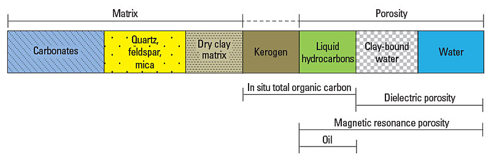

Accurately determine the proportion of movable liquid hydrocarbon to optimize and rationalize completion decisions in an Eagle Ford reservoir.
Differentiate kerogen from hydrocarbon by comparing kerogen-insensitive total porosity (TMCR) from the CMR-Plus combinable magnetic resonance tool with kerogen- and fluid-sensitive total porosity from the bulk density (PHID) computed using the corrected matrix grain density provided by Litho Scanner high-definition spectroscopy service.
Confidently assessed reservoir quality by subtracting the kerogen carbon content, derived from the PHID and TCMR comparison, from the total organic carbon (TOC) determined by Litho Scanner service to identify movable hydrocarbons and optimize the completion design.
An operator wanted to better understand the mineralogy and organic content of an Eagle Ford shale oil reservoir to improve completions decisions. Of particular concern was differentiating the total organic content into kerogen and producible light oil.
By visually determining the kerogen content and producible oil from Litho Scanner service and CMR-Plus magnetic resonance logging of the Eagle Ford reservoir, the operator was able to accurately assess reservoir quality.
Laboratory analysis confirmed the accuracy of the Litho Scanner spectroscopy and CMR-Plus magnetic resonance measurements. Core samples that were washed with solvent to remove the inorganic carbon content before LECO® analysis (fourth track from the right) provided TOC results that agree well with the kerogen differentiated by comparison with the porosity from the CMR-Plus measurements. Cores that were not washed before coulometry analysis (third track from the right) provided TOC values that agree with the Litho Scanner spectroscopy values incorporating kerogen. In the second track from the right, the porosity deficit determined from Litho Scanner service and the CMR-Plus tool measurements is in excellent agreement with the kerogen computed using ELANPlus advanced multimineral log analysis of end points from core analysis.
Litho Scanner high-definition spectroscopy service precisely measures an extended set of key elemental yields, including carbon, to accurately quantify the mineralogy and directly determine the TOC independently of the wellbore environment and reservoir resistivity. The in situ TOC is computed by subtracting the amount of inorganic carbon (IC) associated with carbonate minerals from the total inelastic measurement of carbon. The Litho Scanner service TOC is the carbon contributed by all organic matter present in the formation: kerogen, oil, bitumen, filtrate, gas, coal, etc.
To visually differentiate the kerogen content within the TOC, the total porosity calculated using bulk density (PHID) that was corrected with the matrix density obtained from the Litho Scanner service’s measurement of the elemental weight fractions is compared with the total porosity determined with the CMR-Plus magnetic resonance tool (TMCR). The CMR-Plus tool uses the 50-burst acquisition technique, which collects more data by applying prepolarization. The porosity measured by the CMR-Plus tool responds to fluids but is not sensitive to kerogen. The porosity deficit from the comparison identifies the proportion of kerogen from the TOC; thus, the remaining in situ TOC is associated with the liquid hydrocarbon content.
To visually differentiate the kerogen content within the TOC, the total porosity calculated using bulk density (PHID) that was corrected with the matrix density obtained from the Litho Scanner service’s measurement of the elemental weight fractions is compared with the total porosity determined with the CMR-Plus magnetic resonance tool (TMCR). The CMR-Plus tool uses the 50-burst acquisition technique, which collects more data by applying prepolarization. The porosity measured by the CMR-Plus tool responds to fluids but is not sensitive to kerogen. The porosity deficit from the comparison identifies the proportion of kerogen from the TOC; thus, the remaining in situ TOC is associated with the liquid hydrocarbon content.
